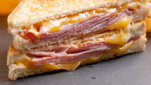

Home
Ham and Cheese

A Ham and Cheese Sandwich is a sandwich that consists of Ham, Cheese and
other condiments like mustard or mayo. The sandwich is the most veritile
of sandwiches since it can be mixed and mashed with tomatoes, lettuce and
even bacon.
Ingredients
Ingrdients are but not limited to:
- Bread
- Ham or Balogna
- Cheese
- Mustard or Mayo (optional)
- Spoon or Butter-Knife
Recipe!
-
On one slice of bread, spread your condiment of choice evenly over the
bread.
-
On the other slice of bread, lay the cheese and meat evenly over the
bread.
-
Put the two slices of bread together with the the meat, cheese, and
condiment facing towards eachother
- Optional: Remove crusts, cut diagonally
- Serve and enjoy!